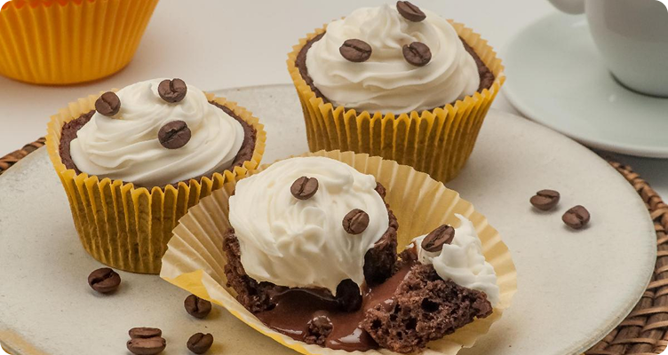

Cupcake de café com chantilly
O bolinho perfeito para acompanhar o café de todos os dias. Uma combinação irresistível de café e chocolate!
⏱️ Tempo: 1h10
üç∞ Rendimento: 12 por√ß√µes
⭐ Dificuldade: fácil
üìù Ingredientes
- 1 e 1/2 xícara (chá) de água morna
- 1 colher (sopa) de café solúvel
- 3 ovos
- 1/2 xícara (chá) de óleo
- 2 xícaras (chá) de açúcar
- 2/3 de xícara (chá) de chocolate em pó
- 2 e 1/2 xícaras (chá) de farinha de trigo
- 1 colher (sopa) de fermento em pó
- 2 xícaras (chá) de chantilly pronto
- Grãos de café para decorar
üë©‚Äçüç≥ Modo de preparo
- Pré-aqueça o forno a 180°C. Forre uma forma de cupcakes com forminhas de papel.
- Misture todos os ingredientes líquidos no liquidificador até obter uma mistura homogênea.
- Acrescente os ingredientes secos peneirados e misture delicadamente.
- Distribua a massa nas forminhas e asse por 20-25 minutos.
- Prepare o chantilly e decore os cupcakes depois de frios.